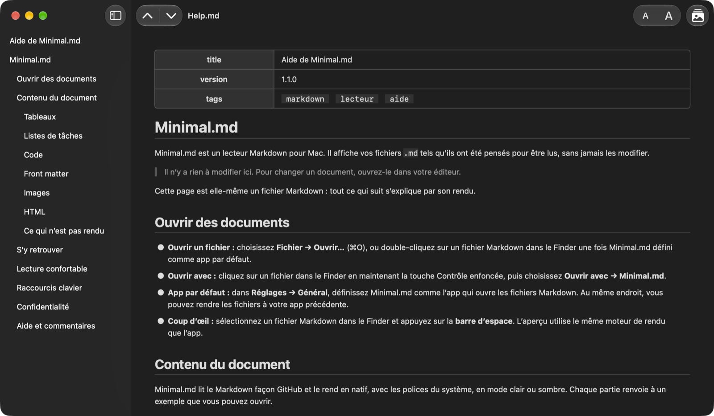

Lecteur Markdown & Coup d’œil
Ouvrez un fichier Markdown et lisez-le, tout simplement.
Minimal.md ouvre les fichiers .md que vous et vos agents d’IA écrivez, et les affiche tels qu’ils ont été pensés pour être lus, sans jamais les modifier.

Fonctionnalités
Pas d’éditeur, pas de synchronisation, pas de compte.
Le document rendu en natif avec les polices du système, en mode clair ou sombre.
Lire, pas modifier
Minimal.md n’écrit jamais dans vos fichiers. Ouvrez du Markdown depuis le Finder ou avec Ouvrir avec, ou faites-en votre app Markdown par défaut dans Réglages → Général.
Travaillez avec vos agents d’IA
Suit le fichier en direct pendant que l’agent l’écrit.
N’entre jamais en conflit avec un agent qui modifie le même fichier.
Coup d’œil
Sélectionnez un fichier Markdown dans le Finder et appuyez sur la barre d’espace pour le lire en rendu, sans ouvrir l’app.
Privé par conception
Aucune connexion réseau, aucune donnée collectée, et les images distantes ne sont jamais chargées. Il ne lit que les fichiers que vous ouvrez et les dossiers que vous partagez.
Captures d’écran
De plus près.
Lecture
Conçu pour la lecture.
Une app macOS native, avec les raccourcis que vous attendez.
Table des matières
La barre latérale liste les titres du document.
Cliquez sur l’un d’eux pour y aller.
⌃⌘S
Titre par titre
Passez au titre précédent ou suivant avec les flèches de la barre d’outils.
Allez au début ou à la fin du document.
⌘↑ ⌘↓ ⌥⌘↑ ⌥⌘↓
Des liens qui fonctionnent
Un lien vers un titre y mène.
Un lien vers un autre fichier Markdown l’ouvre.
Les liens web s’ouvrent dans votre navigateur.
Confort
Agrandissez ou réduisez le texte depuis la barre d’outils : toutes les fenêtres et Coup d’œil suivent.
Clair ou sombre : Minimal.md suit l’apparence de votre Mac.
⌘+ ⌘− ⌘0
Images
Les images enregistrées à côté de votre document s’affichent à leur place.
Les images du web ne sont jamais chargées : vous voyez un repère avec la description de l’image, pas un vide.
⌥⌘L
Contexte
Sélectionnez du texte pour tout ce que propose macOS : Rechercher, Traduire, Outils d’écriture et Services.
Besoin de tout le texte ? Édition → Copier le document au format Markdown copie l’intégralité de la source.
⇧⌘C
Étiquettes de l’App Store
Confidentialité et accessibilité.
Données non collectées
Le développeur ne collecte aucune donnée avec cette app.
Fonctionnalités prises en charge sur Mac
- VoiceOver
- Contrôle vocal
- Interface sombre
- Différencier sans couleur seule
- Contraste suffisant
- Animations réduites
Langues
- Anglais
- Français
- Allemand
- Italien
- Russe
- Espagnol
Vous voulez Minimal.md dans votre langue ? Dites-le-nous.
Nouveautés
Découvrez ce qui a changé dans chaque version dans le journal des modifications (en anglais).
Bêta publique
Envie des nouvelles versions en avance ? Rejoignez la bêta (en anglais).